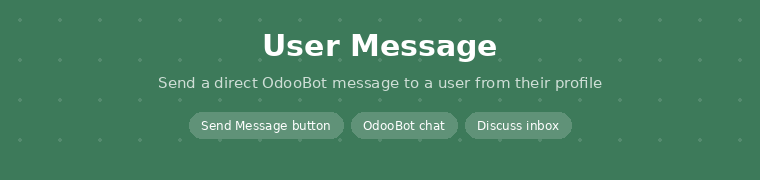
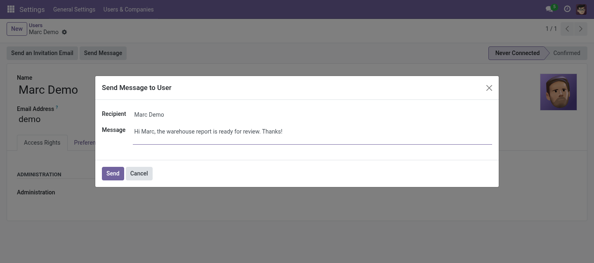

Send a user a direct message from their profile; it lands in their Discuss inbox as a chat from OdooBot.
Odoo 17.0 Community & Enterprise Free · AGPL-3

Send Message on the user form opens a short dialog: write, send, done.
A Send Message button in the user form header.
The user gets a direct chat from OdooBot, not an email they might miss.
The message shows in the user's Discuss inbox and chat window.
Uses Odoo's own Discuss and OdooBot.
Free and open source (AGPL-3) by Paulius Gaizauskas · Questions or bugs: GitHub issues